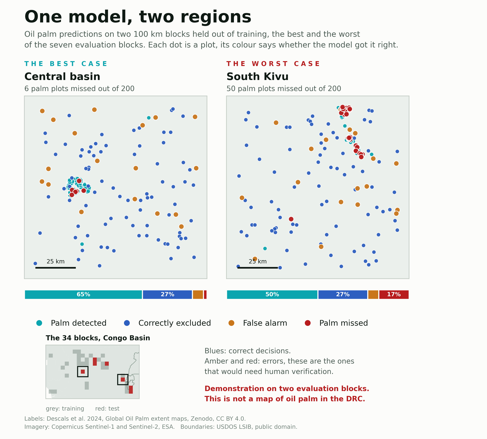
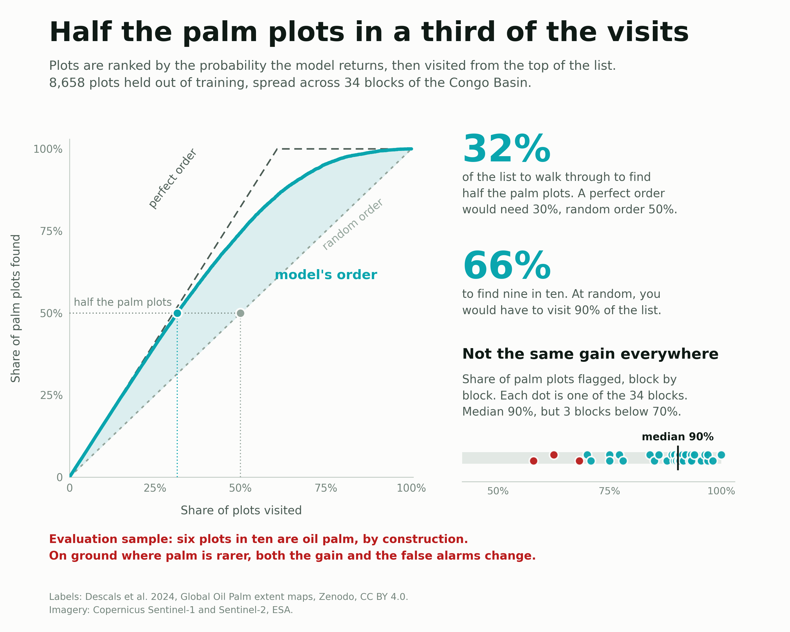
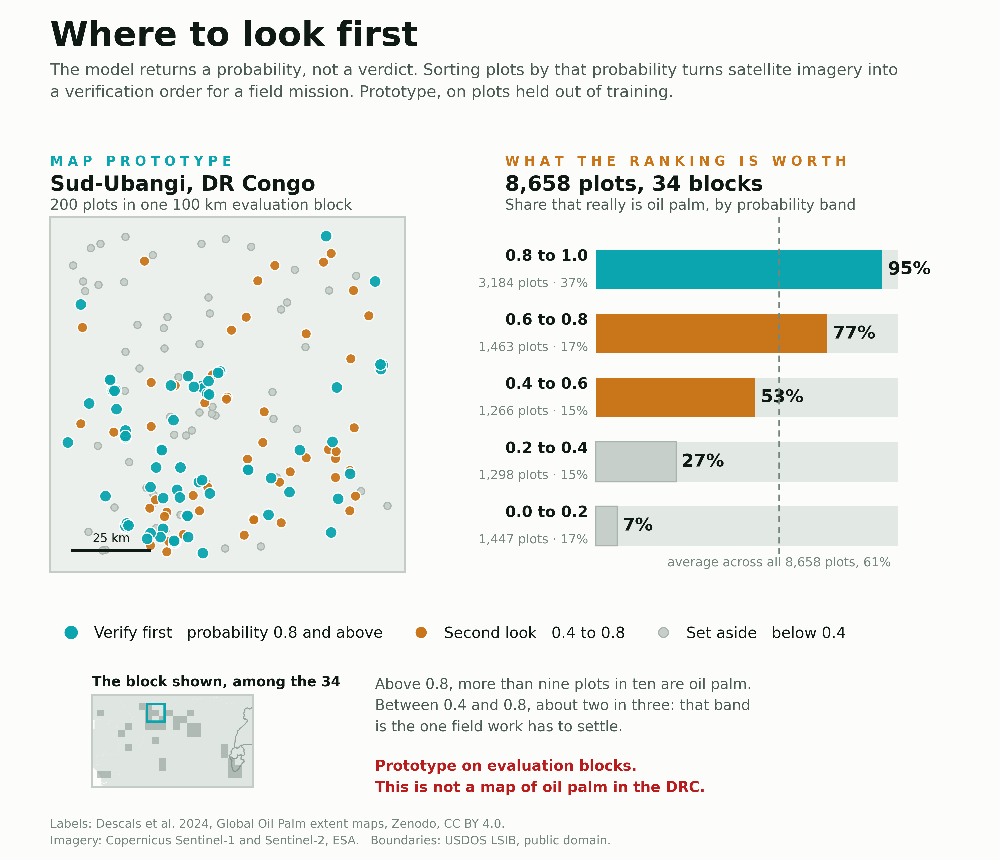

Étude de cas · Télédétection et apprentissage automatique
Un modèle qui repère les plantations de palmier à huile dans le bassin du Congo à partir d'images satellite.
L'usage
Savoir où se trouvent les plantations de palmier à huile est un préalable à presque tout : suivre la déforestation, contrôler une concession, décider où envoyer une équipe. En République démocratique du Congo, cette information n'existe nulle part de façon fiable et à jour, et le pays est trop vaste pour qu'on aille vérifier partout.
Classi-fy réduit ce champ. Sur une parcelle donnée, il indique la probabilité qu'elle contienne du palmier, à partir d'images satellite publiques et gratuites.
L'usage principal est la priorisation. Plutôt que de parcourir cent sites au hasard, on les classe par probabilité décroissante et on commence par ceux qui méritent le plus l'attention. Une équipe qui dispose de dix déplacements les emploie mieux.
Le modèle produit un signal, pas un verdict. Il ne remplace aucune vérification, il indique où regarder d'abord.
Le problème
Vu d'un satellite optique, qui mesure la lumière renvoyée par le sol, une palmeraie et une forêt tropicale dense se ressemblent énormément. Les deux sont des couverts fermés, verts toute l'année, et leur verdure varie au fil des saisons dans des proportions semblables.
C'est la difficulté centrale du problème. Un modèle qui apprend à séparer ces deux couverts risque de s'appuyer non pas sur ce qui les distingue vraiment, mais sur des détails propres à la région où il a appris : la teinte particulière d'un sol, la brume d'une saison, la date d'une prise de vue.
Ces détails fonctionnent parfaitement là où le modèle s'est entraîné, et ne valent rien ailleurs. D'où la question qui a structuré tout le projet : est-ce que ce modèle fonctionne encore dans une région où il n'a jamais mis les pieds ?
L'évaluation
Pour répondre à cette question, la façon habituelle de tester un modèle ne suffit pas.
Elle consiste à mettre de côté une partie des exemples, tirés au hasard, et à s'en servir d'examen. Le problème, en télédétection, est que deux parcelles voisines se ressemblent beaucoup : même sol, même météo, souvent la même image satellite. Avec un tirage au hasard, des parcelles quasi identiques se retrouvent des deux côtés, et le modèle est noté sur des situations très proches de celles qu'il a déjà vues.
J'ai donc découpé le territoire en blocs géographiques de 100 km, et j'ai fait en sorte que chaque bloc soit entièrement d'un seul côté du découpage. Le modèle apprend sur certaines régions et passe son examen sur d'autres, qu'il découvre.
Les deux façons de mesurer donnent des chiffres différents, et l'écart entre elles est instructif.
La solution
L'optique mesure la couleur. Il fallait quelque chose qui mesure la forme.
Le radar satellite ne photographie pas le paysage : il envoie une onde et écoute l'écho. Ce qu'il perçoit, c'est la structure du couvert végétal. Une plantation a des arbres alignés, de hauteur homogène, et renvoie un écho régulier. Une forêt naturelle est désordonnée, et son écho l'est aussi.
Là où l'optique ne voyait aucune différence, le radar en mesure une. Il a aussi un avantage pratique : il traverse les nuages. Sur une région couverte une bonne partie de l'année, c'est ce qui fait la différence entre une donnée exploitable et pas de donnée du tout.
Avec le radar, et en regroupant la question en deux catégories, palmier ou pas de palmier, le score sur des régions inconnues atteint 0,821, mesuré sur cinq examens successifs portant chacun sur des régions différentes.
Les cartes
Un score résume, il ne montre pas. J'ai donc cartographié les résultats de l'évaluation.
Ces cartes affichent les points de test eux-mêmes, ceux sur lesquels la performance a été mesurée. Chaque point est une parcelle, et sa couleur dit ce que le modèle en a fait.
| Couleur | Situation |
|---|---|
| Palmier détecté | il y avait du palmier, le modèle l'a vu |
| Correctement écarté | il n'y avait pas de palmier, le modèle n'en a pas annoncé |
| Fausse alerte | il n'y avait pas de palmier, le modèle en a annoncé |
| Palmier manqué | il y avait du palmier, le modèle ne l'a pas vu |
Les deux premières situations sont des réussites, les deux suivantes des erreurs. Ce sont les erreurs qui demanderaient une vérification humaine, et c'est pour les rendre visibles que la carte existe.

Ces cartes représentent les points de test sur lesquels Classi-fy a été évalué. Elles ne sont pas une carte de prédiction continue et ne décrivent pas encore l'ensemble des paysages de la RDC.
Le choix
Dans la cuvette centrale, le modèle manque 6 palmeraies sur 200. Au Sud-Kivu, il en manque 50 sur 200.
Montrer le mauvais bloc est délibéré. Un modèle ne se comporte pas de la même façon partout, et présenter uniquement la région où il brille donnerait une image fausse de ce qu'on peut en attendre.
L'écart entre ces deux cartes est une information utile pour qui voudrait s'en servir : il dit qu'une vérification locale reste nécessaire avant de faire confiance au modèle dans une zone donnée.
Les chiffres
Maintenant que les cartes sont lisibles, les chiffres prennent leur sens. Sur l'ensemble des parcelles de test, réparties dans des régions que le modèle n'avait jamais vues :
Traduit en usage concret : sur 100 palmeraies existantes, le modèle en signale 90. Quand il annonce du palmier, il a raison dans environ 87 cas sur 100.
C'est exactement le profil d'un outil de priorisation. Il resserre fortement le champ à examiner, sans le refermer complètement. Les 107 palmeraies manquées rappellent qu'une absence de signal n'est pas une preuve d'absence, et les 146 fausses alertes qu'un signal reste à confirmer.
Le terrain
Un score dit si le modèle a raison. Il ne dit pas ce qu'on gagne à s'en servir. La question d'un chef de mission est autre : si je visite les parcelles dans l'ordre du modèle, combien de palmeraies aurai-je trouvées après un quart des visites ?
J'ai donc classé les 8 658 parcelles par probabilité décroissante, puis compté. Pour trouver la moitié des palmeraies, il faut parcourir 32 % de la liste. En visitant au hasard, sans modèle, il en faudrait 50 %. Et un classement parfait, qui mettrait toutes les palmeraies en tête, en demanderait 30 % : sur cette portion, le modèle est à deux points de l'optimum.
Le gain se resserre ensuite. Pour trouver neuf palmeraies sur dix, il faut encore 67 % de la liste, contre 90 % au hasard. C'est le comportement attendu d'un outil de priorisation : il paie beaucoup sur les premières visites, de moins en moins à mesure qu'on veut l'exhaustivité.
Ce gain n'est pas le même partout. Bloc par bloc, la part de palmeraies signalées a une médiane de 90 %, mais trois blocs sur 34 tombent sous 70 %, le plus faible à 58 %. C'est cette dispersion, et non la moyenne, qui décide si le classement est utilisable dans une région donnée.

L'échantillon compte six parcelles de palmier sur dix, parce que l'échantillonnage a visé les zones où le palmier se trouve. Sur un territoire réel, où il est bien plus rare, le gain de tri comme le coût des fausses alertes seraient différents.
La maquette
Une liste ordonnée reste une liste. Pour préparer une tournée, il faut la voir : où sont les parcelles prioritaires, si elles se regroupent, quelle part on écarte d'emblée.
J'ai donc dessiné la maquette sur un bloc, au Sud-Ubangi. Les 200 parcelles y sont réparties en trois décisions plutôt qu'en quatre couleurs de matrice, parce qu'une tournée n'a que trois issues : on y va d'abord, on regarde ensuite, on laisse. Le seuil haut est 0,8, le seuil bas 0,4.
Le panneau de droite est le garde-fou de celui de gauche. Une carte de priorité seule laisserait croire qu'une couleur vaut une confirmation. Les barres rappellent ce que chaque tranche contient réellement : 95 % de palmier au-dessus de 0,8, 77 % entre 0,6 et 0,8, 53 % entre 0,4 et 0,6, 7 % en dessous de 0,2. La moyenne de l'échantillon, 61 %, donne le point de comparaison sans lequel ces chiffres ne veulent rien dire.
C'est une maquette et non un outil. Elle sert à décider de quoi une carte de mission doit être faite avant de la construire.

Maquette dessinée sur un bloc d'évaluation. Ce n'est pas une carte du palmier en RDC, et une probabilité élevée ne confirme pas à elle seule la présence de palmier.
Les limites
Ce modèle n'est pas encore fait pour remplir une carte continue de la RDC.
La raison tient à la façon dont il a appris. Sa catégorie sans palmier ne représente pas l'ensemble des paysages congolais : elle représente ce qui entoure les palmeraies, c'est-à-dire surtout de la forêt et des cultures voisines.
Appliqué à un territoire entier, il rencontrerait des rivières, des villages, des sols nus, de la savane sèche, des reliefs. Autant de milieux qu'il n'a jamais eu l'occasion d'apprendre à écarter. Son comportement y est inconnu, et rien ne permet d'affirmer qu'il y serait fiable.
Afficher une couche de prédiction couvrant tout le pays serait donc trompeur, même accompagnée d'un avertissement : l'image serait belle et l'information fausse. La carte des points de test, elle, est juste, parce qu'elle montre précisément le domaine dans lequel la performance a été mesurée.
Deux autres limites méritent d'être connues. Le modèle ne distingue pas une plantation industrielle d'une palmeraie villageoise, parce que ce qui les sépare est la géométrie des plantations et non ce qu'en voit un satellite point par point. Et les étiquettes qui lui ont servi de référence proviennent elles-mêmes d'un travail de cartographie, avec ses propres erreurs, que Classi-fy hérite sans les corriger.
La suite
Apprendre au modèle à reconnaître savane, ville, montagne et zone humide. C'est ce qui manque le plus.
Dans mon jeu de données, le palmier est très présent parce que l'échantillonnage a visé les zones où il se trouve. Sur le territoire réel, il occupe une fraction de pourcent. Un modèle destiné à couvrir un pays doit être entraîné et réglé dans ces proportions.
L'altitude et la pente écartent d'emblée des zones où le palmier ne pousse pas. Les variables de texture, qui décrivent l'organisation spatiale du couvert, sont la seule piste sérieuse pour distinguer plantation industrielle et palmeraie villageoise.
C'est le seul moyen de mesurer une performance réelle plutôt qu'une concordance avec un autre travail cartographique.
Pour finir
Classi-fy aide à préparer une vérification humaine : il désigne les endroits à regarder en premier et écarte une grande partie du reste. Il ne remplace pas le terrain, et sur les régions qu'il n'a pas apprises, il ne dit rien de fiable.
Ce que je retiens de ce projet est moins le chiffre obtenu que la manière de l'obtenir. Une évaluation par régions disjointes coûte quelques points de score affiché, et donne en échange quelque chose de plus utile : savoir où le modèle tient et où il ne tient pas.
Méthode